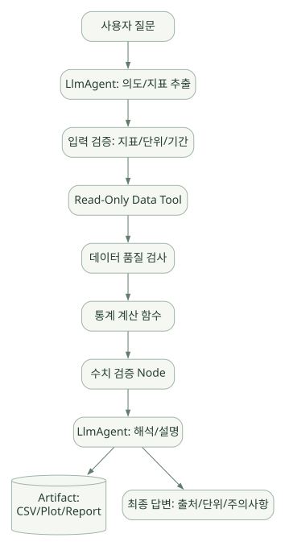
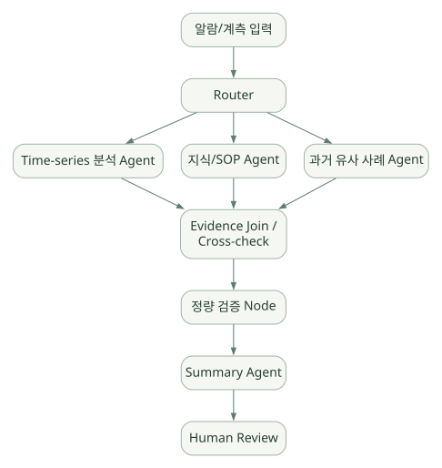
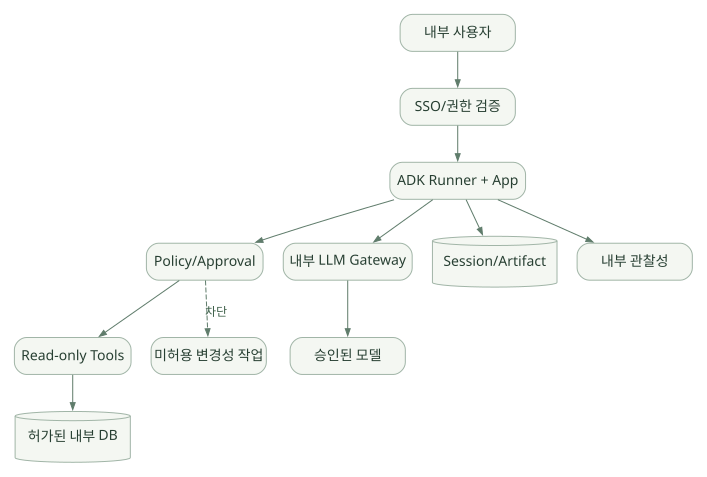

적용과 판단 / 단원 08
반도체 분석의 책임 경계 설계하기
조회·검증·계산·설명·인간 검토를 분리하기
먼저 연결해 보기
원문의 반도체 사례는 합성·공개 데이터를 가정한 설계 예시입니다. 자연어에서 의도를 추출하는 역할과 실제 통계·단위·권한을 검증하는 역할을 서로 다른 단계에 둡니다.
공정 데이터 분석, 문서 검색, 설비 이상 분석의 차이를 확인하고 최소 데모부터 확장할 조건을 읽어 보세요. 사내 Gateway 연결과 제한망 배포는 실제 환경에서 별도로 시험해야 합니다.
읽는 관점수치의 분모·단위·기준 시점과 데이터 버전, 조회 권한이 결과에 어떻게 연결되는지 확인하세요.
50. 사례 A: 반도체 공정 데이터 분석 Agent#
요구사항(가정): 사용자가 합성/공개 테이블 데이터로 특정 지표의 Lot별 평균·표준편차와 이상 여부를 묻는다. 모델이 조회 계획과 분석 절차를 돕지만 숫자 계산은 결정적인 Python/SQL 함수로 수행한다.
넓은 도식은 가로로 이동하며 읽을 수 있습니다. 도식 크게 보기 ↗

원문에 수록된 학습용 도식입니다. 노드·화살표·분기 라벨을 보존해 다시 배치했습니다. 세부 조건과 예시·구현의 구분은 앞뒤 본문을 함께 읽으세요.
도식 원문 보기 (Mermaid)
flowchart TD
U[사용자 질문] --> A[LlmAgent: 의도/지표 추출]
A --> V[입력 검증: 지표/단위/기간]
V --> DB[Read-Only Data Tool]
DB --> QA[데이터 품질 검사]
QA --> STAT[통계 계산 함수]
STAT --> CHECK[수치 검증 Node]
CHECK --> REP[LlmAgent: 해석/설명]
REP --> ART[(Artifact: CSV/Plot/Report)]
REP --> OUT[최종 답변: 출처/단위/주의사항]Agent가 맡을 일과 맡지 않을 일#
| 작업 | 권장 담당 | 이유 |
|---|---|---|
| 사용자 표현에서 지표 추출 | LlmAgent | 자연어 처리 장점 |
| 사용자 권한 검사 | 서버 인증/인가 | 결정적·감사 가능한 정책 |
| DB 조회 | 읽기 전용 Tool | SQL 실행/권한 제한 |
| 결측·이상치 처리 | 검증된 통계 함수 | 재현성과 설명 책임 |
| 공정 영향 해석 | LlmAgent + 도메인 근거 | 전문 지식 보조 |
| 평균/표준편차 계산 | 코드 | 추정 오류 예방 |
| 보고서 문장화 | LlmAgent | 자연어 생성 장점 |
| 결과 검수 | 결정적 검증 + 사람 | 수치·도메인 타당성 확보 |
데이터 모델 예제(합성 데이터)#
measurements(
event_time, lot_id, wafer_id, die_id,
process_step, tool_id, chamber_id,
metric_name, value, unit,
recipe_version, measurement_method,
record_version
)반드시 확인할 도메인 질문:
- Lot과 Wafer와 Site를 독립 표본으로 취급할 수 있는가?
- 분석 단위가 공정 전/후, 검사 장비별, Chamber별로 동일한가?
nm,%,um등 단위 변환 규칙이 정해져 있는가?- OOS(규격 초과), OOC(통계 관리 한계 초과) 정의가 서로 다른가?
- 데이터가 재측정/재작업(Rework)을 포함하는가?
- 이상치 제거가 공정 엔지니어 승인 절차를 요구하는가?
51. 사례 B: 반도체 전문 문서 검색 Agent#
목표: 공정 SOP/교육 자료/장비 설명서를 검색해 근거 있는 답변을 제공한다.
User question
-> Query Router
-> Authorization Filter
-> Search/RAG Tool
-> 문서/섹션/개정 이력 반환
-> Grounding Check
-> Answer + Citations + VersionRAG와 Memory를 혼동하지 말 것#
- RAG: 문서 검색 인덱스를 통해 외부 지식을 가져옴.
- Memory: 사용자의 과거 대화/선호/업무 맥락을 기억하는 용도.
- Session: 현재 대화 이력.
RAG 인덱스에서는 문서의 document_id, revision, effective_date, owner, security_class, page, section 등을 메타데이터로 유지해야 한다. 최신 문서보다 오래된 SOP가 검색되는 위험을 관리해야 한다.
정답에 포함해야 할 필드(제안)#
{
"answer": "이 측정 항목은 ...",
"references": [
{"document_id": "SYNTH-SOP-001", "revision": "R2", "section": "3.1"}
],
"known_limitations": ["장비 모델과 공정 조건별 차이가 있을 수 있음"],
"confidence_policy": "근거 불충분 시 확인 필요로 표시"
}위 JSON은 ADK 기본 출력 형식이 아니라 애플리케이션에서 정의할 스키마의 예시다.
52. 사례 C: 설비 이상 원인 분석 Multi-Agent#
가정: 최근 설비 알람과 측정값의 변화를 보고 가능한 원인 가설을 생성·검증한다. 실제 장비를 제어하지 않는다.
넓은 도식은 가로로 이동하며 읽을 수 있습니다. 도식 크게 보기 ↗

원문에 수록된 학습용 도식입니다. 노드·화살표·분기 라벨을 보존해 다시 배치했습니다. 세부 조건과 예시·구현의 구분은 앞뒤 본문을 함께 읽으세요.
도식 원문 보기 (Mermaid)
flowchart TD
I[알람/계측 입력] --> R[Router]
R --> T[Time-series 분석 Agent]
R --> K[지식/SOP Agent]
R --> H[과거 유사 사례 Agent]
T --> J[Evidence Join / Cross-check]
K --> J
H --> J
J --> V[정량 검증 Node]
V --> S[Summary Agent]
S --> A[Human Review]단일 Agent보다 Multi-Agent가 유리한 조건: 도구/지식이 크게 달라 역할을 분리할 이점이 있고, 서로 독립적으로 실행할 수 있는 분석 과제가 있으며, 결과를 통합 검증할 명확한 계약이 있는 경우.
Multi-Agent가 불리한 조건: 간단한 조회를 굳이 여러 모델에 위임해 지연·비용·실패 경로만 늘리는 경우, 각 Agent의 결과 계약이 모호해 최종 통합 과정에서 정보가 왜곡되는 경우.
53. 권장 첫 데모의 최소 구성#
처음부터 Full Multi-Agent를 구현할 필요는 없다. 학습 후 실험에서는 다음 순서가 합리적이다.
| 단계 | 데모 목표 | 필요한 구성 | 통과 기준 |
|---|---|---|---|
| P0 | 단일 Agent + 고정 사전 | LlmAgent + 1~2 Function Tools | 정확한 Tool 사용과 답변 |
| P1 | 읽기 전용 테이블 분석 | 조회 Tool + 결정적 통계 | 수치·단위 오류 0건 |
| P2 | Session/State 관리 | Runner + 지속형 Session | 여러 턴의 요청 컨텍스트 유지 |
| P3 | 문서 RAG | Search Tool + 문서 버전 메타데이터 | 근거 링크와 ACL 준수 |
| P4 | Graph Workflow | 분기/검증 Node | 실패 처리·경로 재현 |
| P5 | Multi-Agent | 전문 Agent + Join + 검증 | 역할 분리의 정량적 이득 확인 |
| P6 | 운영 평가 | Tracing/Evals/보안 테스트 | 정책 위반 없음, 지연 예산 충족 |
학습 단계인 현재는 해당 구현을 수행하지 않는다. 위 표는 향후 프레임워크 선정과 실험 계획 수립을 위한 기준이다.
54. 사내 LLM Gateway 및 제한망에서의 검토 항목#
| 영역 | 질문 | ADK만으로 충분한가? |
|---|---|---|
| 모델 연결 | OpenAI-compatible Endpoint를 지원하는가? | LiteLLM/Adapter 연결 경로는 있으나 검증 필요 |
| API 보안 | 사내 토큰/인증서/프록시를 적용할 수 있는가? | 별도 인증·네트워크 설정 필요 |
| 툴 접근 | 사내 SQL/파일 서버에 접근할 수 있는가? | 커스텀 Tool/MCP 연동 구현 필요 |
| 데이터 유출 방지 | 원시 측정값을 외부로 보내지 않는가? | 사내 정책과 네트워크 차단 필수 |
| 저장소 | Session/Memory/Artifact를 내부 저장할 수 있는가? | Backend 구성 필요 |
| 모델 기능 | 도구 호출/Streaming/구조화 출력이 모두 동작하는가? | 모델별 실증 검증 필요 |
| 운영 로그 | 외부 Telemetry 서비스로 누출되지 않는가? | Exporter와 수집 정책 설정 필요 |
| 재현성 | 고정 데이터·온도·도구 버전에서 동일한가? | 별도 시험·운영 통제 필요 |
모델 교체 시험 매트릭스(제안)#
[필수] 일반 텍스트 응답
[필수] Function Calling (단일/복수/연속 호출)
[필수] Invalid Tool Arguments 처리
[필수] Timeout/Error 응답
[필수] Tool Call ID 정합성
[권장] Streaming Events
[권장] Structured Output
[권장] Prompt/Response Audit
[선택] Multimodal 입력
[선택] Long Context / Context Caching
[선택] Session Resume / Human Input55. 데이터 정확성: 프레임워크와 도메인 로직의 경계#
예를 들어 모델이 “수율이 3% 증가했다”고 썼다고 해도 다음의 구분이 필요하다.
- 3%p 증가인가, 3% 상대 증가인가?
- 어느 기준 시점과 비교했는가?
- 분모는 전체 Wafer, Die, 측정 Site 중 무엇인가?
- 결측 데이터는 제외했는가?
- 재측정과 Rework의 중복을 제거했는가?
- 유의한 변화인지 통계적 검정이 필요한가?
- 모델이 가져온 원자료의 버전은 무엇인가?
이 7가지는 ADK의 모델 실행 기능만으로 해결되지 않는다. 따라서 도메인 별 Business Rule·Schema·검증 Tool·평가셋을 독립 개발해야 한다.
56. 보안 경계가 포함된 권장 아키텍처#
넓은 도식은 가로로 이동하며 읽을 수 있습니다. 도식 크게 보기 ↗

원문에 수록된 학습용 도식입니다. 노드·화살표·분기 라벨을 보존해 다시 배치했습니다. 세부 조건과 예시·구현의 구분은 앞뒤 본문을 함께 읽으세요.
도식 원문 보기 (Mermaid)
flowchart LR
UI[내부 사용자] --> AUTH[SSO/권한 검증]
AUTH --> ADK[ADK Runner + App]
ADK --> POLICY[Policy/Approval]
POLICY --> READ[Read-only Tools]
READ --> DATA[(허가된 내부 DB)]
ADK --> GATE[내부 LLM Gateway]
GATE --> MODEL[승인된 모델]
ADK --> STORE[(Session/Artifact)]
ADK --> OTEL[내부 관찰성]
POLICY -. 차단 .-> WRITE[미허용 변경성 작업]최소 권한과 명시적 데이터 이동 경로를 먼저 설계한다. 관리형 클라우드에 배포할지 여부와 상관없이, 모델 API를 통한 데이터 전송 범위가 사내 정책에 부합하는지 검토해야 한다.